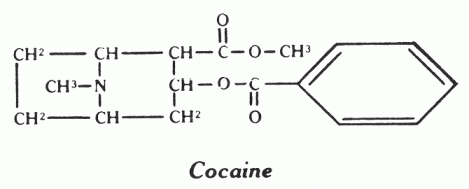
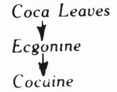
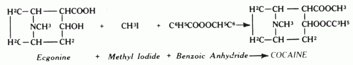
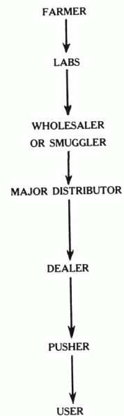

[index]COCAINEby Michael Valentine SmithThe leaves of Erythryoxylon coca, from which cocaine is obtained, were used by the Incas at least 1,000 years ago. The annual consumption of coca leaf in South America (mainly Bolivia and Peru) by about twenty million users amounts to about 150,000 pounds of cocaine. They chew their leaves with lime (CaO, etc.) which degrades cocaine to ecgonine - but this compound still relieves hunger and fatigue. Cocaine produces little effect orally, so sniffing is the preferred route of administration. Regarding its supposed aphrodisiac properties, it is interesting that one native legend ascribed the magical origin of the coca leaf to the fascination of a conqueror for the bright eyes of a princess who loved him to death. The plant grows in Australia and Africa, as well as in Western South America, and much cocaine was produced in Java. Other species of the genus seem to produce little or no cocaine. Coca-cola got its name from the coca leaf extract which it contained (as did a variety of wines) until 1904. Neither tolerance nor physical addiction to cocaine seem to occur, so sniffing it occasionally should be quite safe. Cocaine has structural and pharmacological similarities to the active constituents of belladonna and jimson weed and can likewise space you out in very undesirable ways, expecially if used frequently. Also, as with every drug, some people are very sensitive to it and can become paranoid, etc. with very little exposure. Cocaine base ("free base") is much more euphorigenic than cocaine and consequently much more damaging. It seems to have the addictive pull of heroin for many users and is probably best avoided. Coca leaf contains l-ecgonine, cinnamyl cocaine and alpha and beta-truxillyl ecgonine (cocamine), which can be converted to cocaine, but d-ecgonine or pseudoecgonine leads to isomers which are devoid of the strong central stimulating effects of l-cocaine. During the process of isolation from the leaf, l-cocaine is converted to ecgonine ( Cocaine ExtractionCocaine can be extracted from the leaves with almost any organic solvent. Moisten the dried, powdered leaves with Na carbonate solution and extract with cold benzene or petroleum ether. Extract the organic solution with small amounts of dilute sulfuric acid and basify the extract with Na carbonate (the alkaloids precipitate). Dissolve the precipitate in ether, separate the ether from the aqueous Na carbonate and dry and evaporate in vacuum the ether. Dissolve the residue in methanol and heat with sulfuric acid or methanol HCl; dilute with water and extract with CHCl3. Concentrate and neutralize the aqueous layer and cool to precipitate methylecgonine sulfate, which is converted to cocaine in one step. The alkaloids can also be extracted directly from the powder with dilute sulfuric acid. Cocaine From Coca PasteThis process (see Bull. on Narcotics 17,29(1965)) is optional since the paste is usually greater than 70% cocaine. Dissolve 1 g coca paste in 10 ml 3% sulfuric acid, cool to 0°C and add with stirring 8 ml 6% KMnO4 and 10% sulfuric acid, 1 ml at a time over one hour. Let stand 0.5 hour and add powdered oxalic acid with stirring until the precipitate which has formed dissolves. Extract twice with ether, basify the aqueous solution with NH4OH and extract four times with 18 ml ether. Dry and evaporate the ether in vacuum to get cocaine. The aqueous solution contains ecgonine, which can be converted to cocaine as shown below. Cocaine SynthesisThe zinc-mercury amalgam used for reduction here and elsewhere can be prepared as follows. Add mossy zinc (powdered will probably do) to 1 % aqueous HgCl2, stir awhile, pour off the water and use the Zn-Hg residue for reduction. Method I JGC 30,1138,2070(1960); CA 53,423(1959)During one hour pass 70 g dry chlorine gas into a stirred solution of 68 g furan in 630 ml methylene chloride and 630 ml methanol at -40°. Protect from moisture (CaCl2 drying tube) and use dry methanol. Alternatively, 160 g Br2 or Cl2 in 630 ml methylene chloride (or methanol in which case add 200 g anhydrous K acetate or pyridine) at -40° is added dropwise to 68 g furan in 630 ml methanol at -40° (keep temperature lower than -30° during the reaction). Stir 0.5 hour and pass in dry NH3 (or concentrated NH4OH) until pH is 8. Filter and wash precipitate with 3 x 50 ml methylene chloride. If only methanol has been used, after stirring 0.5 hour pour into 3 L cooled, aqueous, saturated CaCl2 and extract with ether or methylene chloride. Dry and evaporate in vacuum the combined organic solutions to get 90 g 2,5-dimethoxy-2,5 dihydrofuran (I) as a colorless liquid (can distill 40/4 or 71/17). Ethanol can be used in place of methanol, but add 190 ml ether (if reaction temperature rises too high, the methyldiacetyl of maleindialdehyde is produced - this can be reduced to the methyldiacetyl of succinic dialdehyde, which can be used in place of (II) to get (IV)). Hydrogenate 47.5 g (I) in presence of 5 g Raney-Ni at room temperature and 1 atmosphere H2 with stirring (NaBH4-Ni reduction described at start should also work). After absorption of 7.2 L H2 over two to three hours, filter and wash catalyst with 15 ml ethanol and evaporate in vacuum (or distill 77/20 for ethoxy compound, 53/22 for methoxy compound) to get 40 g 2,5-diethoxy (or dimethoxy)-tetrahydrofuran (II). To a mixture of 360 g 50% KOH and 138 ml methanol, add with stirring at -5° 70.5 g dimethyl ester of acetone dicarboxylic acid (dimethyl-beta-ketoglutarate - see method 3 for preparation) and let temperature rise to about 25° over 0.5 hour. Let stand ten minutes, cool to 0° and add 65 ml ether. Filter, wash precipitate with 65 ml ethanol and 150 ml ether at 0° to get 75 g (III). To 322 ml 1N HCl at 80°, add 41.1 g (II) and stir twenty minutes; cool to 10°, add 211 ml 1N HCl, 98.2 g (III), 26.4 g Na acetate and 28.2 g methylamine HCl. Stir four hours at room temperature, cool to 10°, and saturate with 410 g KOH. Extract four times with methyl-Cl or benzene (75 ml each, fifteen minutes stirring) and evaporate in vacuum to get the methyl ester of tropan-3-one-2-COOH (IV), which precipitates from the oil (can distill 85/0.2). Test for activity. Dissolve 28.3 g (IV) in 170 ml 10% sulfuric acid; cool to -5° and treat with 3.63 kg 1.5% Na-Hg amalgam with vigorous stirring at 0°. See below for easier methods of reducing (IV). Keep pH about 3.2 by adding 30% sulfuric acid and continue stirring 0.5 hour or until 3 drops of the mixture fail to give a red color with a 10% solution of FeCl3. Filter and saturate the solution with 235 g KOH or K carbonate below 15°. Extract with 5 x 250 ml CHCl3 and dry, evaporate in vacuum to get an oil. (The inactive isomer can be separated at this point (if desired) by letting stand five days at 0° (methyl ester of racemic pseudo-ecgonine precipitates)). Mix the oil plus any precipitate with an equal volume of ether and filter. Add 250 ml dry ether until no more precipitate forms, then filter (test precipitate for activity - if active, this step is unnecessary) and stir with activated carbon 0.5 hour. Filter and evaporate in vacuum, dissolve the brown liquid in 17 ml methanol, and neutralize with 10% HCl in dry ether. Evaporate the ether until the two layers disappear and let stand two hours at 0° to precipitate the racemic methylecgonine (V). Filter, wash with 1: 1 methanol:ether at 0°. Can purify by dissolving in methanol and washing with 1:1 methanol:ether and ether. To prepare the Na amalgam, use an electrolyzer with an Hg cathode, Ni anode, and 40% NaOH solution; current about 29 amps, 7.5 volts. Heat 9.35 g (V) on water bath ten hours with 18.7 g benzoyl-Cl and pour the liquid formed into 250 ml ether; evaporate in vacuum. The powder formed on rubbing the residue is dissolved in 85 ml ice water and neutralized with 20% NH4OH. Racemic cocaine (VI) is filtered off, washed with 12 ml ice water and dried over CaCl2. To get the HCl of (VI), dissolve it in seven times its weight of ether containing HCl in ethanol and wash the precipitate with 1:3 methanol:ether, then ether. Alternatively, mixture of 4 g (V), 36 ml benzene, 1.6 g Na carbonate and 7 ml benzoyl-Cl; stir and heat 96-100° for ten hours. Evaporate in vacuum, cool to 0° and add 40 ml ice water. Acidify with HCl to pH 5 and extract with 3 x 20 ml ether. Neutralize the aqueous solution with 20% NH4OH to separate an oil from which cocaine precipitates on standing (from JGC 30,3228(1960)). For an electrolytic method of producing (I) see ACS 6,531 (1952). For other methods of synthesizing (II) see JACS 72,872 (1950), CA 42,2992(1948). For the reduction of the tropinone (IV) to ecgonine (V), lithium aluminum hydride or NaBH4 give about 50%, the Na-Hg method described above about 40%, and Al triisopropoxide about 25% of the inactive pseudoecgonine. The latter method, which appears to be the best, involves heating at 82° 1.5 hours in isopropanol with Al triisopropoxide (Chem. and Ind. 664(1957)). For NaBH4, reflux six hours in methanol. A method said to be superior to that given above for the conversion of methylecgonine to cocaine follows. Cocaine from Ecgonine BER 89,679(1956)Dissolve 8.66 g ecgonine in 100 ml methanol and bubble dry HCl gas through for 0.5 hour. Let stand two hours at room temperature and then reflux gently for 0.5 hour. Evaporate in vacuum, basify with NaOH and filter to get 8.4 g methylecgonine (V) (recrystallize isopropanol). Add 4.16 g (V) and 5.7 g benzoic anhydride in 150 ml benzene with CaCl2 tube to exclude water and gently reflux four hours. Cool in ice bath, acidify with HCl and dry, evaporate in vacuum (or extract with ether, basify with NaOH, saturate with K carbonate and extract with CHCl3:dry and evaporate in vacuum) to get 6 g red oil which precipitates (VI) with addition of a little isopropanol. Method 2 JOC 22,1391(1957)Suspend 40 g beta-ketoglutaric acid in a mixture of 60 ml glacial acetic acid, 43 ml acetic anhydride and stir three hours at 10°. Filter, wash precipitate with benzene and dry in vacuum over KOH about two hours to get 30 g beta-ketoglutaric anhydride (I). Dissolve 13.5 g (I) in 50 ml cold methanol and let stand one hour at room temperature. Add this solution to a solution of 10 g methylamine HCl, 4 g NaOH in 850 ml water and stir in 125 ml 0.8N succindialdehyde (preparation below). Let stand twenty-four hours at room temperature, take pH to 4 with 6N HCl and wash with 35 ml CHCl3. Dry and evaporate in vacuum (or basify with 20 ml 4N NaOH and 4 g KHCO3, extract with 9 x 100 ml CHCl3 and dry, evaporate 75% of the CHCl3 on steam bath, then evaporate in vacuum) to get 16 g yellow oily 2-carbomethoxytropinone (methyl tropan-3-one-2-carboxylate). Recrystallize by dissolving the oil in 30 ml hot methyl acetate and add 4 ml cold water and 4 ml acetone; let stand three hours at 0°, filter and wash precipitate with cold methyl acetate. This product is identical with (IV) of method 1 and is converted to cocaine as already described. Succindialdehyde JOC 22,1390(1957)Suspend 23.2 g succinaldoxime powder in 410 ml 1 N sulfuric acid and add dropwise with stirring at about 0° a solution of 27.6 g Na nitrite in 250 ml water over three hours. Stir two hours at room temperature (keeping air out), stir in 5 g Ba carbonate and filter. The succindialdehyde should then be extracted from the basic solution with ether and the ether dried and evaporated in vacuum. For succinaldoxime preparation, see JOC 21,644(1956) and JACS 68,1608(1946). Method 3 JOC 22,1389(1957)Add with stirring over 1.5 hours 192 g powdered anhydrous citric acid in 32 g portions to 202 ml (383 g) fuming sulfuric acid (21%). Make the first two additions at 0° carefully; the other four at 15°. Stir one hour at room temperature, and for three hours at 35° and 17 hours at 25°. Add dropwise with stirring below 0°, 500 ml methanol over three hours. Keep about fifteen hours at room temperature and add to a stirred mixture of 700 g NaHCO3, 500 g ice and 200 ml water. Filter, wash precipitate with 150 ml 50% aqueous methanol and extract the filtrate with 7 x 400 ml ether. Dry and evaporate in vacuum (can distill 85/1) to get 110 g oily dimethyl-beta-ketoglutarate (I). Use this in method 1 or as follows. Dissolve 33.6 g KOH in 150 ml methanol and add dropwise at 0° over 0.5 hour (or at room temperature over one hour) to 43.5 ml (I) in 10 ml methanol. Let stand three hours at room temperature, add 50 ml ether and refrigerate twelve hours to precipitate the dipotassium salt of monomethyl-beta-ketoglutarate (II). Dissolve 10 g succindialdehyde in 200 ml water at -5° and add 41 g (II) and 11.8 g methylamine HCl. Let stand a few hours at room temperature and proceed as in method 2. Method 4 JOC 22,1389(1957)Mixture of 1.35 g Na methoxide (Na in methanol), 3.48 g tropinone (which can be obtained by K dichromate oxidation of tropine), 4 ml dimethylcarbonate and 10 ml toluene. Reflux 0.5 hour, cool to 0° and add 15 ml water containing 2.5g NH4Cl. Extract with 4 x 50 ml CHCl3, dry and evaporate in vacuum and dissolve the oil in 100 ml ether. Wash twice with a mixture of 6 ml saturated aqueous K carbonate and 3 ml 3N KOH (dry and evaporate in vacuum the ether to recover unreacted tropinone). Take up the oil which separates in saturated aqueous NH4Cl and extract it with CHCl3. Dry and evaporate in vacuum to get an oil which is dissolved in hot acetone. Cool, add a little water and rub to start precipitation of 1.5 g 2-carbomethoxytropinone. This is identical with (IV) of method 1, and can be recrystallized and converted to cocaine as already described. Other ReferencesThe various cocaine precursors and analogs seem not to have been tested for psychedelic activity. Cogentin (benzo-tropane) is hallucinogenic at a dose of about 4 mg. Synthetic compounds which may have activity are l-pseudo-cocaine, tropacocaine, eccaine, eucaine, and benzoyl-N-methyl-granatoline (se BER 51,235(1918), Chem. Zentr. 1402(1939), JCS 41(1924), 1150(1925), 1429 (1932), 1511(1933), Q.J. Pharm. Pharmcol. 7,46(1934)). For a simple synthesis of pseudopelletierine, which can be reduced and acylated to give active compounds, see J. Pharm. Pharmacol. 22 (supplement), 29(1970). For a review of tropane chemistry see Manske (Ed.), The Alkaloids 1,271(1951), 5,211(1955), 9,269 (1967) 13,351(1971). JCS 3575(1957), Acta Pharm. Suecica 7,239(1970) and JMC 16,1260(1973) contain further information on cocaine analogs. For Cogentin synthesis see CA 47,2218h(1953). It may be possible to partially oxidize butanediol to butanedial (succindialdehyde) and distill this as the reaction occurs. Cocaine Manufacture and the Cocaine Traffic(The following summary of cocaine preparation and trade was prepared by the California State Attorney General in 1973.) The coca plant is an evergreen, native to South America, particularly the countries of Peru, Bolivia, Brazil, Chile and Columbia, and should not be confused with the cocoa plant, from which chocolate is made. Although the coca plant is native to South America, it has been successfully cultivated in Java, West Indies, India and Australia. The coca plant is grown on mountain slopes or terrace uplands that have a tropical or semi-tropical climate. Actually, the plant is grown under conditions which are little suited for other crops. These mountainous areas of South America vary in altitude from 1,000 to 6,000 feet above sea level and temperatures of 68 to 86 degrees Fahrenheit. The most suitable conditions for the development of the coca plant are clay type soils, rich in humus and iron content, situated in sheltered upland valleys and exposed to constant humidity and rain precipitation. Under ideal conditions, the plant can survive, for a century or more, growing steadily in strength. In the cultivation of the coca plant, the seeds are usually taken from a plant three or more years old, placed in containers and germinated in damp sheltered nurseries. They are watered heavily for five days until they begin to swell after which they are planted in a mixture of humus sand and earth, in equal proportions, shaded and abundantly watered. After about a week and a half, the shoots begin to appear and the germinated seeds can be transplanted within 2 months. The sparsely leaved plant is usually 6 to 10 inches in height and is transplanted in the open since it has become resistant to most climatic variations. The young plant is usually planted in small trenches varying in density from 1 to 4 plants per square yard. Once the young plant has been transplanted (usually in the wintertime) into open fields, there is very little the cultivator does except leave the plants to themselves. Where dampness is constant and rain is regular, even irrigation is unnecessary. After approximately 1 year from the transplanting, the coca plant yields its first crop of leaves which is generally the reason the coca bush has been cultivated in the first place. The plant normally yields 4 crops of leaves per year. The coca plant is a shrub-like bush which grows from 5 to 10 feet tall with widely branched trunks containing twigs which become densely populated with leaves toward the ends. The green smooth edged leaves vary from 1 to 3 inches long and smell very similar to tea leaves. Normally, in order for the harvesting of the coca leaf to be profitable, there must be a minimum of 72,000 plants for every 10,000 square meters and the plant must last for over 30 years. Approximately 10 million coca plants produce 700,000 kilograms of coca leaf. The average coca leaf contains from 0.5 to 1 % of the alkaloid cocaine although there are various factors influencing the cocaine content including atmospheric conditions, age and condition of the plant, quality of the soil, fertilizers used, timing of cultivation and harvesting, the drying process, etc. It is estimated that one man can harvest approximately 30 kilograms of leaves in a day. The drying process is very important and takes approximately 2 days of at least 3 hours of daily sunshine. During the process, the leaves must be turned over for even drying. If the drying is to extensive, the leaves will become too dry and lose their commercial value. In the drying process, the coca leaf loses more than 75% of its original weight. The leaf is divided into 3 basic categories: 1. Dark green colored leaf, dried by mechanical means or by airing and pressed into bales. This form is best suited for use in export. 2. Dark colored leaf resulting from defective drying and deliberately beat in order to meet wide demand for consumption. 3. Leaves which as a result of neglect, dampness, delay in drying or disease, have lost some of their alkaloid content, and are of practically no commercial value. This type of coca leaf is often used as a local fertilizer. Once the leaves are dry, they are pressed and wrapped into packages of 50 or 30 kilograms. In 1965, 1 kilogram of dried coca leaf, in Bolivia, was valued at approximately one dollar. The coca leaf is commonly chewed by the natives of South America. The natives claim that the cocaine depresses their hunger and increases their strength. The leaves are very bitter when chewed and are often flavored with another substance such as lime. It has been estimated that over 90% of the Indians chew the coca leaf. The native chews, on an average, about two ounces of coca leaf daily and is often characterized by blackish red deposits on his teeth. The coca leaf is either consumed by the natives of South America or exported to other countries for consumption. Another use of the coca leaf is in the extraction of cocaine either for illegitimate or legitimate use. The majority of the legal and/or clandestine cocaine factories are in South America due to the cost and bulk of transporting the whole leaf. In 1961, Bolivia produced an annual crop of from 12,000 to 18,000 tons of leaves although only half reached the legal market. The alkaloid cocaine is extracted from the coca leaf in basically three different chemical procedures. These procedures are used both in licit and illicit labs in the production of cocaine. Manufacture of CocaineAccording to a chemist who assisted in the legal manufacture of cocaine, there are three basic methods of extracting cocaine from the coca leaf: 1. The dried coca leaf is treated, through a chemical process, with an acid solution such as sulfuric acid, producing raw cocaine or coca paste. The coca paste which contains approximately 70% cocaine, is put through another chemical process with hydrochloric acid creating a hydrochloric salt or cocaine hydrochloride which is soluble in water. This particular process is very time consuming and can take from 1 to 2 weeks to complete. This process is used by both the legitimate and illicit manufacturers of cocaine. 2. The dry coca leaf is treated in a chemical process with a basic solution such as sodium carbonate, producing raw cocaine. The raw cocaine is then put through another chemical process with hydrochloric acid creating a hydrochloric salt or cocaine hydrochloride. This process is less time consuming than process No. 1 and it is probably the one preferred by the illicit manufacturer. 3. The third process is more advanced and technical than the other two procedures. The basic advantage of this process is that it gives a greater yield. The dried coca leaf, with it's various alkaloids including cocaine, is broken down into ecgonine which is the chemical base or core of the cocaine molecule. The ecgonine is then treated with methyl iodide and benzoic anhydride in a chemical process creating pure cocaine.  Cocaine PreparationThe Peruvian coca leaves, because of their richness, are commonly used in the extraction process as described in 1 or 2. When the dried coca leaves have a low cocaine content, the ecgonine process is preferred. Normally, it takes approximately 100 pounds of dried leaves to produce one pound of cocaine. A chemist from the Federal Bureau of Narcotics and Dangerous Drugs, who was in Bolivia to observe clandestine cocaine operations, related the following step-by-step procedure for manufacturing cocaine. The method can be conveniently divided into three major steps: (1) extraction of cocaine from the leaf and chemical conversion to the sulfate; (2) treatment of cocaine sulfate with potassium permanganate and conversion to the free base (aka paste); and (3) conversion of the paste or free base to cocaine hydrochloride. In general, steps (1) and (2) are carried out in "sulfate" labs while step (3) is performed in "crystal" labs. Coca leaves to cocaine sulfateStep 1: (a) A sufficient volume of warm water is used to dissolve 26 kgm of potassium carbonate. This solution is poured into a "cut-out" drum containing 250 pounds of dried coca leaves (the volume of solution is just enough to cover the leaves). (b) The coca leaves and carbonate solution are treated in one of three ways: 1. The mixture is stirred by hand. 2. The mixture is stepped on by the local Indians. 3. The mixture remains untouched (the first two methods generally take one day if done by strong individuals while the third method involves a period of four days; the treatment of the leaves with an aqueous solution of potassium carbonate allows penetration of the solution into the leaves converting any cocaine salts to the free base, allowing for subsequent extraction into kerosene). (c) To the potassium carbonate solution and the leaves are added 200-400 L kerosene. The result of this is a greenish viscous liquid of about 300-400 L. Water and kerosene are immiscible but apparently "bridging" materials are extracted from the leaf which allows miscibility between the potassium carbonate solution and the kerosene; it was also explained that what we know as kerosene is also called benzin and paraffin, depending who is manufacturing the cocaine; this explanation clarified pre-existing conflicts about certain method terminology. (d) The kerosene extract is separated from the leaves by draining through a plug in the bottom of the drum. The kerosene extract (300-400 L) is placed in another container and 1 L of concentrated sulfuric acid is added very slowly. A precipitate begins to come out of solution and settle to the bottom of the container (apparently kerosene-insoluble cocaine sulfate and other alkaloidal sulfates are formed). (e) The liquid is separated from the sulfate precipitate and may be used to extract the next batch of fresh leaves (the liquid would probably have to be reconstituted, though, with potassium carbonate, etc.). (f) The sulfate residue, about 1 kgm, is allowed to dry in the sun for about one day. Cocaine sulfate to cocaine base (paste)Step 2: (a) Into a container holding 6 L of water and 360 cc of concentrated sulfuric acid the sulfate precipitate from the preceeding step is added and the solution stirred. (b) In another container 1 L of water and 1 kgm of commercial potassium permanganate are mixed. (c) The permanganate solution of (b) is slowly poured into the sulfuric acid solution of (a). (d) The resultant purple-colored solution is then filtered through paper; if the filtrate is colored it is passed back through the filter (the use of potassium permanganate in the manufacturing process has been well-established; it is probably added as a decolorizing agent, with most of the colored residue remaining on the filter paper; commercial potassium permanganate is easily obtained in LaPaz through pharmacies; it is used by the local inhabitants to bathe the feet). (e) To filtrate of about 6 L is added 1 L of ammonia; a precipitate is formed which is dried in the sun or under ultraviolet light (the resultant precipitate is cocaine free base or paste plus impurities). Cocaine base (paste) to cocaine hydrochlorideStep 3: (a) To the approximately 1 kgm of paste in a container is added 10 L of acetone and the resultant solution filtered through paper (the residue on the paper is probably inorganic in nature; ether can be used instead of acetone with some modification in the procedure; both ether and acetone can solubilize cocaine base while they are both good solvents for the crystallization of the hydrochloride salt). (b) To the filtrate is added 10 L more of acetone; the resultant 20 L is passed through new filter paper. The temperature of the acetone should be about 150 C. in order to accept the hydrochloric acid and alcohol. (c) To the 20 L of acetone are added 300 cc of concentrated hydrochloric acid and 300 cc of absolute ethanol; on the addition of absolute ethanol cocaine hydrochloride starts crystallizing out. (d) After 3-4 hours crystal formation is complete and the cocaine hydrochloride crystals are collected on filter paper and dried in air. Kerosene, which is used in great volumes in the initial extraction procedure is not controlled in Bolivia and is, in fact, used by the populace for heating their homes. It would theoretically be very easy to obtain kerosene in large quantities through pharmacies in La Paz. The inorganic reagents such as sulfuric acid, hydrochloric acid, ammonia, and potassium carbonate are not controlled. Ether and absolute alcohol, on the other hand, are controlled substances. Diluted alcohol (about 50%) is not controlled though and, accordingly, can be converted to absolute alcohol. Trafficking in CocaineA. LegalOnce the cocaine has been legally produced from the coca leaf, it is exported to various countries for medicinal use, basically as a topical local anesthetic (applied to the surface, not injected, only treating a particular area). In the United States the crystalline powder is imported to pharmaceutical companies who process and package the cocaine for medical use. Merck Pharmaceutical Company and Mallinckrodt Chemical Works distribute cocaine in crystalline form (Hydrochloride Salt) in dark colored glass bottles to pharmacies and hospitals throughout the United States. Cocaine, in the alkaloid form (base drug containing no additives such as hydrochloride in the crystalline form) is rarely used for medicinal purposes. Cocaine hydrochloride crystals or flakes come in 1/8, 1/4 and 1 ounce bottles from the manufacturer and has a wholesale price of approximately $20 to $25 per ounce (100% pure). Cocaine is still a drug of choice among many physicians as a topical local anesthetic because the drug has vasoconstrictive qualities (shrinks and stops the flow of blood). Synthetic local anesthetics such as novacaine and xylocaine (lidocaine) have also been discovered and used extensively as a local anesthetic. B. IllegalHierarchy Of Cocaine Traffic 1: Cultivates, harvests and sells dried coca leaves to clandestine labs at a price of from $1 to $3 per kilo. 2: Extract cocaine from the dried coca leaves and sell pure cocaine to the wholesaler at a price of $3,000 per kilo realizing a profit of approximately $2,500 per kilo. 3: Directly sells or smuggles the kilo of pure cocaine to the distributer for a price of $18,000 per kilo realizing a profit of $15,000 per kilo. 4: "Cuts" the cocaine and sells pound quantities to dealers for $10,000 per pound (50% pure cocaine) realizing a profit of $22,000 from the original kilo he purchased. 5: "Cuts" the cocaine and sells ounce quantities (30-40% pure cocaine) to the pushers for $800-$1,200 per ounce, realizing a profit of $10,000 from the pound he originally purchased. 6: May "cut" the cocaine and sell gram (spoon) quantities to users for $50-$75 per gram realizing a profit of $1,000 from the original ounce he purchased. The original 100 kilos of dried coca leaf that it takes to produce 1 kilo of pure cocaine costs approximately $200. The kilo of pure cocaine will eventually be worth over $200,000 when sold to users in 25% pure gram quantities. The illicitly manufactured cocaine from the various clandestine cocaine labs in South America, is smuggled to various countries including the United States for black market trafficking and use. Those involved in the smuggling of cocaine vary from a one man operation to organized syndicates. The smuggling methods are unlimited and vary with one's imagination. Often times, cocaine is first smuggled into Mexico rather than directly from South America to the United States. Cocaine, as is heroin, is usually packaged in hermetically sealed plastic bags or rubber condoms for smuggling purposes. Once the cocaine enters the US, it is then distributed through various sub-dealers down to the users. Illicit cocaine, basically, comes in three forms: 1. The hard tiny rock form which is readily available, especially to the large wholesaler or dealer. 2. The flake form which is generally fairly pure cocaine which has been broken down into tiny flakes and considered a delicacy among users of cocaine. 3. The powdered form which is usually rock or flaked cocaine diluted with other substances such as lactose or procaine. In the illicit traffic of cocaine, as in many other drugs, there is a definite channel which the drug goes through from the harvester to the user. Initially, there is the farmer who cultivates, dries and ships the coca leaf to the illicit lab. The clandestine labs then chemically extract 90 to 100% pure cocaine from the leaf. From the lab, the cocaine is usually sold to smugglers or wholesalers at a price of $200 an ounce or $3,000 a kilo. The wholesaler smuggles the cocaine into the United States and sells it to a major cocaine distributor for a certain agreed upon price which varies and ranges from $18,000 to $22,000 a kilo. The distributor will then take the large quantity of cocaine and sell lesser amounts to a number of dealers. He may sell the cocaine in its pure form or dilute it and sell more for a lower price. Most of the traffickers keep in mind that cocaine loses its strength readily and sometimes the cutting or diluting agent will have a tendency after a period of time to begin destroying the cocaine content. When the dealers are in possesison of their 0.5 pound or pound of cocaine, they will most often dilute it with a cutting agent and sell it in ounce quantities to even smaller dealers. The cocaine street pusher will in turn, sell it to the user in gram quantities. Dilution or "Cutting" of CocaineThe paraphernalia and diluting agents for the cutting of cocaine are very similar to those used for heroin. One of the basic differences between "stepping on" (diluting) cocaine as compared to heroin, is that cocaine is usually only diluted down from 20 to 40%. The process for cutting cocaine varies from individual to individual with often times the large dealer using a more elaborate process, but the basic operation is the same throughout cocaine traffic. The basic paraphernalia used is:Diluting agent, scales, measuring spoons, flat nonporous surface, razor blade, playing card or some other sharp-edged instrument, sifter or nylon stocking, funnel and packaging container such as rubber condoms, tinfoil bindles or plastic baggies. The cutting or diluting agent used for cocaine again varies with the individual and the substance that is readily available to that individual. Some of the common cutting agents for cocaine are: Procaine which is a synthetic preparation in powder form used as a local anesthetic; Mannite, a sugar substance used as a laxative and produced in Italy; Menita, a milk sugar from Mexico and South America; Lactose or Dextrose, a white powdered milk sugar used as a baby food supplement and purchased readily in the United States in any drug store; Powdered methamphetamine also known as speed; Epsom salts; Quinine used to treat leg cramps and malaria; Powder vitamins purchased in health food stores and just about any soluble powder that is not disruptive to the body can be used, such as baking soda, powdered sugar, powdered milk, starch, etc The dealer will either be told the percentage of cocaine by a trusted "connection" or he will be able to approximate the percentage by various means. Some of the ways of ascertaining the approximate percentage of cocaine and the cutting agent are: 1. Quantitative chemical analysis which is an elaborate process requiring a qualified chemist and some elaborate laboratory equipment. 2. Cocaine drug testing kits either manufactured for law enforcement purposes or produced by the underground. These testing kits are simply presumptive color tests. The basic color test used for cocaine is cobalt thiocyanate. The cocaine or any of the other substances from the caine family will form a brilliant blue flaky precipitate in the cobalt thiocyanate. This is an indication that the product is cocaine, procaine, tetracaine, etc. In order to determine whether there is actually any cocaine and not all procaine, stannous chloride is added to the precipitate causing all of the caines except cocaine to dissolve. If the dealer suspects that the cocaine has been cut with another caine, he can then make a partial determination as to how much of the procaine or other caine is contained in the total powder. 3. Chlorox test. It is alleged that the dealer can take suspected cocaine and drop it in a vial of clorox. Presumably the cocaine will dissolve completely and procaine will turn a reddish orange color with any other cut trailing to the bottom of the vial as residue. 4. Water Test. It is also alleged by the street dealers, that a determination can be made as to how much cut is in the cocaine by placing the powdered substance in a glass of water. The cocaine will dissolve almost immediately leaving the remaining cut which normally will dissolve slower and not as clear. 5. Burning test. The powdered cocaine is placed on aluminum foil and held over a low flame or match. The cocaine will burn clear. A sugar cut will darken and burn a dark brown or black therefore the larger the cut, the darker the burn. Crystallized speed or methamphetamine will pop when burned. Salts do not burn and remain as residue (cuts such as procaine or quinine also burn fairly pure although it is alleged that procaine can be detected by a bubbling of the substance before it burns clear). 6. Methanol test. Most common cuts do not dissolve in pure alcohol although cocaine does. Unfortunately for the dealer, procaine and methamphetamine also dissolve in pure alcohol. It is imperative that pure methanol be used since any water in the alcohol will tend to dissolve sugar and salt. Methanol can be obtained in most paint supply stores as methalated spirits. The dealer will take two equal amounts of the cocaine substance and place the equal amounts in two teaspoons next to one another. At this time, 0.25 of a teaspoon of pure methanol is added to one of the spoons. The mixture is then stirred and any powder that remains is compared to the original unaltered amount in the second teaspoon to determine the percentage of the cut. If, for example, 20% of the original amount did not dissolve, the substance tested would be no more than 80% pure. If the suspected cut is procaine, the cocaine substance can be added to sodium carbonate solution. This would dissolve all the cocaine leaving just the procaine. 7. Use test. Some dealers will test the percentage of cocaine by inhaling (snorting) it into the nostrils. This is probably the best and most common street test in determining the purity of the cocaine. The tester should standardize the amount snorted so that he will have the ability to distinguish. The tester will look for the swiftness of the high and the "freeze" or numbness the substance causes. If the nasal passages burn and the eyes tear, there is a good possibility the cocaine has been cut with speed. Sugar and salt cuts will often times cause a post nasal drip. Excessive sweating and hyperactivity could mean either a speed or quinine cut was used. Excessive diarrhea would denote a laxative type cut such as epsom salts or menita. Speed tends to cause irregular bowel movement. A greater degree of numbness indicates the presence of procaine or other local anesthesia. 8. Taste test. Cocaine has a bitter taste and the addition of any cut will tend to alter that taste. A milk sugar cut will sweeten the cocaine although dextrose has a tendency to sweeten the substance more than lactose. Procaine will be bitter to the taste but will tend to numb the gums and tongue quicker and longer than cocaine. Salt has an after taste and epsom salts are a bit more sour in taste and sandy in texture. 9. Observation test. Pure cocaine crystals have a shiny almost transparent appearance and even when crushed, will retain the crystalline sparkle. The crystalline sparkle of cocaine will be dulled by most cuts. Dextrose has less dulling effect than lactose although a speed cuf usually dulls the crystals less than most other cuts. Although salts have a crystalline structure, they tend to be duller than the cocaine crystals. An alleged indication of the purity of the cocaine is the tiny rock-like material contained within the total substance. The tiny rocks are allegedly pure cocaine as they come from the manufacturer. The rock or hard substance can be felt by feeling the powdered substance. Once the dealer has ascertained the purity of the cocaine and/or the cut or diluting agent used, he is then ready to begin the process of "stepping on" the cocaine. Most dealers will dilute a small portion of the cocaine and then re-test it. Most of the dealers claim that they usually only cut the amount of cocaine that will immediately be sold due to the fact that the cuts have a tendency to destroy the stability of cocaine. It is therefore advantageous to the dealer to keep the cocaine sealed in a cool place such as the refrigerator and in an amber or dark-colored jar to retain the strength of the drug as long as possible. Dealers claim that with time, moisture, warmth, air and sunlight tend to decrease the potency of the cocaine. The process for "stepping on coke" again varies with individuals but the two basic formulas are similar to those of heroin and are as follows: 1 oz. of Lactose added to 1 oz. of 100% Cocaine = 2 oz. of 50% Cocaine 2 oz. of Lactose added to 2 oz. of 50% Cocaine = 4 oz. of 25% Cocaine 2 oz. of Lactose added to 1 oz. of 100% Cocaine = 3 oz. of 33.3% Cocaine 3 oz. of Lactose added to 1 oz. of 100% Cocaine = 4 oz. of 25% Cocaine 4 oz. of Lactose added to 1 oz. of 100% Cocaine = 5 oz. 20% Cocaine The dealer will measure out the desired amount of cocaine, for instance five level teaspoons, and place it in a pile on a flat nonporous surface such as a record album, mirror or glass plate. He will then measure out the desired amount of lactose and place it in a separate pile on the same surface. Then, using a playing card, razor blade, knife or any sharp edged instrument, the dealer chops the cocaine to take out all the lumps so the cocaine is a fairly fine powder. The cocaine is then sifted through a sifter or nylon stocking producing a fine fluffed powder and removing foreign material from the substance. Once through the sifter, the cocaine usually has a little more volume since it has been fluffed. The cocaine is sifted into a pile and the same process is repeated with the diluting agent. The dealer will then mix the pile of cocaine into the pile of diluting agent. Once this has been accomplished, he sifts the diluted cocaine through a sifter trying to get the mixture as equal as possible. The dealer may resift the diluted cocaine to assure an equally distributed mixture. The sifted cocaine is placed in a single pile. At this time, the dealer is ready to place the cocaine into packages for sale. In larger quantities, the cocaine is usually packaged in either airtight rubber condoms or plastic baggies that are also airtight. A rubber condom will usually hold from 0.5 ounce to 3 ounces of cocaine whereas a plastic baggie can hold up to 6 ounces of cocaine. It appears that most dealers prefer using the plastic baggie since it is believed that synthetic hard plastics and rubber tend to react unfavorably with cocaine in terms of chemical composition and therefore in time, decrease the potency of the cocaine. Smaller amounts or gram quantities of cocaine are usually packaged in smaller airtight clear plastic bags, paper bindles or tin foil bindles. It is very uncommon to see cocaine packaged in toy balloons the way heroin is packaged because of the action of the rubber with cocaine. Once the dealer has diluted the cocaine, he will measure out the desired amount to be packaged. This can be done by measuring it on a scale. For ounce quantities, the dealer will measure on a scale approximately 28 grams and then place this powder into a rubber condom or a plastic baggie. The dealer will then, using a rubber condom, tie a knot in the condom and possibly fold the open end back over for added protection. When using a plastic baggie, the dealer will get as much of the air out as possible and either fold the baggie over and seal it with scotch tape or use a twister to seal the end of the baggie. Another method of determining the proper amount of cocaine to be packaged is by using measuring spoons. If the dealer is going to use the most common measure of cocaine, that is a "spoon" or approximately a gram, he will measure out a level half teaspoon and place it in the proper packaging device. When using paper bindles, the dealer will place the cocaine on the extreme inside of the paper bindle, usually a square piece of paper with 4 inches by 4 inches being a common size and drawing the two opposite ends together to form a triangle. The dealer will then begin at the base of the triangle and fold approximately 0.25 inch folds in the paper bindle until there is approximately an inch of unfolded triangle left at the top. The outer wings of the paper bindle are then folded inside and the unfolded top of the bindle is folded and tucked into the wings. When using tin foil, the dealer will put the desired amount inside a square piece of tin foil, fold the square over into a rectangle, seal the top with a small fold and then fold the extreme ends into the inside. Once the cocaine has been packaged, it is ready to sell to either smaller dealers or to users. How to Grow Coca Plants1. Seeds should be planted as soon as they fall from the bush. If they dry out, they will die right away. The only way to keep them for a maximum of about two weeks, is to keep them in moist (not wet) sphagnum in a cool place. Often this initiates germination, so they must be watched for rot or premature germination. Under no circumstances should they be kept dry, since even room humidity is too dry. 2. Vermiculite seems to be the best medium for coca germination, fine grade if possible. Styrofoam cups are OK, but I prefer small plastic pots, 2"diameter, with holes in the bottom. Seeds should be planted no deeper than one inch. Pots should be raised so as not to saturate the medium. Coca, whether as a seedling or a mature plant, never likes to have wet feet. I think it is better to start them in small pots rather than flats, so there is less damage to the root system when they are transplanted. Forget the hot pad -- I think it is completely unnecessary. Seedlings usually come up in 2 to 4 weeks if they are viable. 3. Since most people don't have enough room in their shower stalls for plants, I'd say forget this one, too. Seeds will germinate in any warm place, even if the humidity is not too great. A better idea is to place your germination pots in a terrarium with a coarse gravel layer on the bottom. Do not seal over and allow plenty of ventilation if you choose to place a layer of glass over the terrarium. Any box of this sort will do. If possible, place a Growlux fluorescent fixture, with two 40 W bulbs, over the terrarium, especially after seeds germinate. A common problem at this state is etiolation (too little light) which makes the plantlets weak and very susceptible to damping off, a fungus attack of the tender stems. 4. Water the seeds when the vermiculite starts to dry out. Once a day is probably too often, unless you live in a very dry apartment. But if the drainage is good and you have plenty of holes in the bottom of the pots, excess water should drain off. Fungal attack is a real problem in a humid atmosphere and another reason for keeping the plants out of your shower, a basically unhygenic place for plants. 5. Transplanting: plantlets can remain in vermiculite starting pots until they are about 2-3 inches tall. The growlights should be about a foot above the plants. I do not recommend clay pots at this stage. They dry out too fast, especially in a dry apartment. Even in one day, a fast-drying shock can kill your plants. It is better to move into plastic pots, but the size should be increased gradually. A big pot is not necessarily good for a small plant, in fact it is not a good idea at all. From styrofoam cups, I suggest a two-inch pot, then increase 1-2 inches per transplanting. 6. Soil mixture: forget the vermiculite from now on. It holds too much moisture and makes for saturated, unhealthy soil. I suggest the following: 0.25 coarse clean sand, 0.25 perlite, 0.25 sterilized loam, and 0.25 milled peat. If this seems too light, increase loam and peat. Some sterilized organic compost, screened, may also be added for nutrition. 7. Even when the plants are still in vermiculite, feeding with soluble plant food is recommended. They are heavy feeders and every three weeks or more often is not too often to fertilize. When plants are older it is important to give them iron in the form of iron chelate, available as a red powder sold as KEELATE on the West Coast. A yellow powder, not as good, is sold as SEQUESTRENE. This element should be added about every six months, but strictly according to instructions. Soil must be flushed three times after applying the dissolved iron compound to avoid burning roots. Most yellowed or bleached out leaves are caused by iron deficiency, but this also occurs when plants go deciduous. Periodically, the whole coca bush turns yellow and drops its leaves, every one. Most people freak out when this happens, but if it is otherwise a healthy, vigorous plant, then this is normal. After dropping, new flushes soon appear to renew the foliage. This is more likely to happen with Erythroxylum coca than with E. novogranatense. 8. Transplanting depends on the size of the plant and how fast it is growing. If you think your plant needs transplanting, look at the holes in the bottom of the pot to see if any roots are present. If so, then the roots have probably filled the pot and it is time. You can also carefully de-pot the plant by tapping upside down on a table edge. Repotting is probably unnecessary unless the roots have encircled the inner periphery of the pot. Again, the size of the pot should be increased gradually for best growth. 9. Watering: most city water, is unsuitable for coca. They are calciphobes and don't like heavy salts in the water. Best to use rainwater, melted snow, bottled spring water or distilled water if they are available. Plants should only be watered if the soil dries out. Stick your finger in the soil. If it feels moist, don't water. 10. Bugs: coca is amazingly resistant to insects and mites. Mealy bugs are the worst offenders. These may be removed with a forceps or cotton swab dipped in 50-70% alcohol. Keep infested plants in quarantine. Malathion may be used as a last resort, but then leaves cannot be used until the next flush (of leaves). 11 Light: warm, sunny exposure indoors. Full sun (through a window) will not hurt plantlets over 3 inches tall. But no full sun outdoors until they are 3 feet tall. If plants are put out in the summer, they should be protected from sun, rain, and wind, until they are large and strong. Put them in a shady place first, under a tree, etc., end gradually move to a sunnier location. Breezes are good for plants and even indoors a fan on low should be directed towards the plants. It makes them stronger. 12. Plants can also be grown entirely under growlights, or a combination of growlights and window light. Most apartments are not sunny enough for strong growth, so especially in winter, give the plants accessory light. Growlux Widespectrum Tubes seem to work well. I use one Growlux and one regular Sylvania Lifeline tube in each fixture. They work very well. The lamps are suspended 6 inches to one foot above larger plants. 13. Careful removal of the older leaves does not harm plants, but they should be strong and healthy to allow this, and probably three years old if grown indoors. 14. Coca does not like extremes of any kind. 50° F. is the lowest permissible temperature, 90° F. the highest. Sudden temperature changes are especially damaging. Likewise, sudden changes in air humidity or soil moisture. E. novogranatense tolerates extremes, especially droughts, better than E. coca, which is a much more delicate plant, but the one which produces the most alkaloid. 15. Coca cuttings root very poorly. I have managed to root some E. novogranatense cuttings only after six months in perlite with an initial application of Hormodin #1 rooting hormone. It is better to fertilize your flowers and plant seed. Some varieties are self-compatible (self-fertilizing). Others require two plants of different stylar lengths (long styled x short styled) to produce seed. This is routinely accomplished by bees and other insects in the greenhouse during the summer months and can be done with a fine artists brush at home, merely by dusting pollen from flowers on one plant to those on another with opposite stylar form. In California, outdoor cultivation of coca is possible only around San Diego, if there. Trujillo Coca would probably do well there under irrigation and intensive care. Elsewhere, forget it. I do not subscribe to growing it commercially indoors and doubt if the produce would be worthwhile. Greenhouse and apartment grown leaf is very inferior in flavor and potency. Fresh air and sunshine are in order (as with Cannabis). Additional Notes1. When plants are sprouting, it is OK to have several of them in the same pot -- a 5-inch clay pot will do for between 4 and 7 sprouts. When they reach at least two inches tall, it is good to transplant them into individual pots using the soil mixture recommended earlier. 2. In handling the young plants, no matter how tall or short they are, always be careful not to touch the young plants or to touch them as little as possible, particularly on the roots and on the tips of the stems. The tips of the stems are where the shoots come from that allow the plant to grow, and even when the plant is mature, never touch the end of the stems and never remove the leaves that cling precariously to the end of the stem. 3. Don't freak out when the plants go deciduous, usually about a year or a year and a half from sprouting. They drop almost all their leaves except the ones at the tip of the stems, turn yellow and mottled, and you think they're dying. They're not -- in fact, they're growing! Within a few days, little spike-shaped green sprouts will appear, and tiny, usually white, flowers. After a few years, the flowers will start producing little seedpods, roundish oval shaped green pods that the flower may still cling to. These then dry and turn slowly red on the plant, reaching a bright red like a cherry-colored coffee fruit, which contains the albumin and nourishment for the tiny seed in the center. Usually the shrubs will go through the leaf-fall several times, about once every 2 or 3 months, before the seedpods appear. Don't expect seeds until the plant is 3 to 5 years old. 4. Back to when the plants are still sprouts. Every day -- usually in the morning, but it depends on what fits your schedule best -once a day, flush the pots with clean water, preferably rainwater or distilled. Literally hold the whole pot (without its saucer) under very gently flowing water poured into the vermiculite or soil without touching the plant. The soil or medium should almost let the water drain straight through, retaining moisture but not water in the medium. This is the way to "water" a young plant. When they get older, you can just water them regularly like any other plant, but lightly, daily. 5. The most important thing in tending young plants is to keep the temperature even and constant, day and night, around 64° F. They can stand slightly higher or lower temperatures but they can't stand shifting temperatures. 6. Once the plants get to be above a foot, they are pretty well established. After that first scary leaf-dropping, you will learn to recognize that process when it happens as described in Note 3 above. There is a different phenomenon that looks somewhat similar that happens to plants if they go through a sudden temperature change, especially if it gets cold suddenly or if they are exposed to cold fog and winds without much warm sunlight. In this case, the leaves very quickly become dry and crinkled and, turn deep brown and yellow-brown mottling, at first on their leaf tips and soon covering the whole leaf. This means your plant is about to die. The only thing to do is to lightly spray the leaves with pure (not tap) water and keep the plants at a constant warm temperature and talk to them and keep careful watch on them. Don't over-water, but keep the leaves themselves warm and moist. The plant has a 50% chance for recovery. |